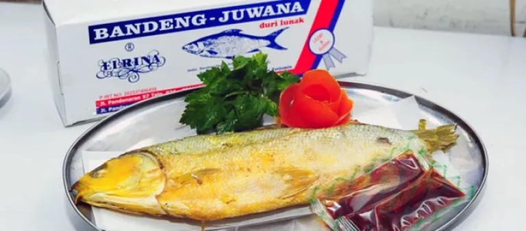

Bandeng Presto, a celebrated Indonesian dish, features milkfish marinated in traditional spices and uniquely pressure-cooked to tenderize the fish while softening its bones. The result is a flavorful delicacy served with creamy coconut milk sauce, steamed rice, fresh vegetables, and spicy sambal, symbolizing Semarang's culinary richness and cherished traditions.
